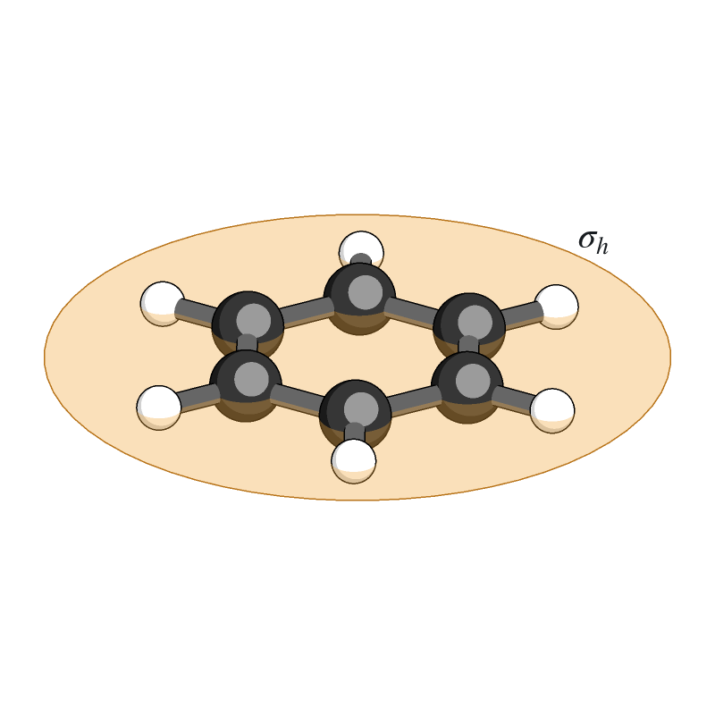
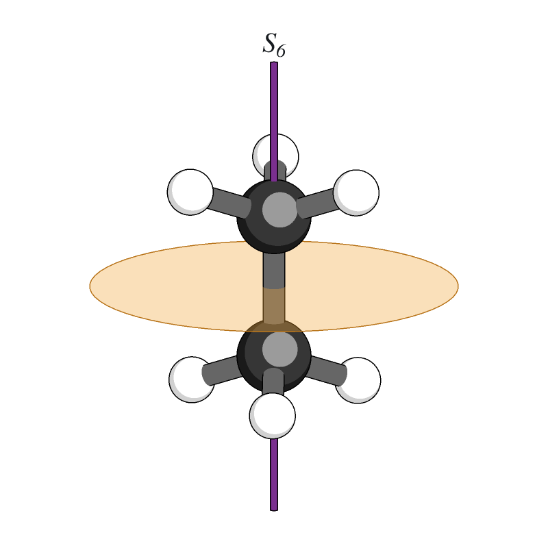

18 NOVEMBER 2026 · QASR V0.8.0
Point-group symmetry elements
Show where a symmetry operation of a molecule lies: a rotation axis, a mirror plane, an improper rotation or an inversion centre, one operation per image.
New in this minor release
--symmetrywith--symmetry-axisand--symmetry-origindraws the element ofE,i,Cn,Snor a mirror plane.- A
symmetryobject in recipes and jobs adds axes through two atoms, planes through three atoms, dashed axes, plane shape, colors and subscripted labels. - Every operation is checked against the atoms before drawing; a wrong axis, origin or order fails with exit code 5 and names the worst atom.
--movie symmetryanimates the operation in FFmpeg builds: atoms rotate, pass through the plane or centre, or rotate then reflect, under a fixed camera. How it moves.- Symmetry labels use outline lettering embedded in the executable, serif italic by default and sans on request.
- Atom labels, the legend, axis letters and the scale-bar label use the same smooth outlines instead of the bitmap font. Atom labels drop their white plate, scale with the atoms and choose dark or light lettering automatically. Each label follows the centroid of its atom’s visible part and fades as the atom is covered, so labels glide through movies instead of jumping.
- A gallery of fourteen recipes for water, ammonia, benzene, ethane, methane and boron trifluoride.






Compatibility
The executable remains qasr; configuration and job schema versions remain 1. Renders without annotations or a symmetry operation are unchanged; annotated images differ in their lettering. --inspect-scene gains the primitive kind symmetry_axis and, with an operation, a symmetry object. Symmetry elements require the Z-buffer backend; fixed framing and orbit or trajectory movies do not reserve room for the label.
Downloads and evidence
Current source · Example recipes · CO orbital example. The source package contains docs/release-v0.8.0.md and the guide in docs/symmetry.md. Earlier release records retain their original scope; the historical v0.3.0 download remains unchanged.